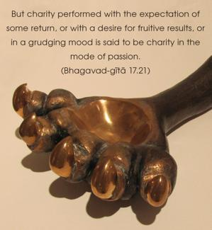

But charity performed with the expectation of some return, or with a desire for fruitive results, or in a grudging mood is said to be charity in the mode of passion.

Charity is sometimes performed for elevation to the heavenly kingdom and sometimes with great trouble and with repentance afterwards: “Why have I spent so much in this way?” Charity is also sometimes given under some obligation, at the request of a superior. These kinds of charity are said to be given in the mode of passion.
There are many charitable foundations which offer their gifts to institutions where sense gratification goes on. Such charities are not recommended in the Vedic scripture. Only charity in the mode of goodness is recommended.